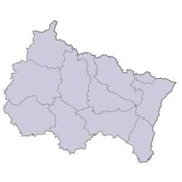
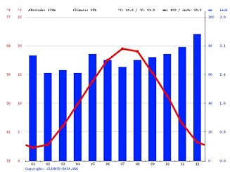

Climatologie de Metz(57)
Le diagramme ombrothermique ci-dessous correspond au climat attendu dans ce secteur de la région:l'influance océanique est bien présente dans les précipitations avec des pluies régulières tout au long de l'année. Les hivers sont plus marqués que les régions de l'Ouest avec des températures moyennes minimales légèrement négatives en Janvier et Février, ce qui signal la présence de nombreuses gelées matinales. Un pic à 19,5°C de température moyenne maximale au coeur de l'été marque la présence de nombreuses journées chaudes. Dans l'ensemble, ce type de resultat est typiquement celui d'un climat océanique mais avec des écarts de températures plus marqués entre l'été et l'hiver.


| Janvier | Fevrier | Mars | Avril | Mai | Juin | Juillet | Aout | Septembre | Octobre | Novembre | Décembre | |
| Températures moyennes minimales(°C) | -0,1 | -0,3 | 1,9 | 5 | 9,2 | 12,5 | 14,7 | 14,4 | 11,2 | 8 | 3,9 | 1 |
| Températures moyennes maximales(°C) | 2,3 | 2,8 | 6 | 9,8 | 13,8 | 17,5 | 19,5 | 19 | 15,3 | 11,3 | 6,4 | 3,2 |
| Températures moyennes(°C) | 4,8 | 6,1 | 1,9 | 5 | 9,2 | 12,5 | 14,7 | 14,4 | 11,2 | 8 | 3,9 | 1 |
| Précipitations(mm) | 73 | 61 | 63 | 61 | 74 | 70 | 65 | 70 | 72 | 74 | 79 | 88 |